Puji syukur penulis panjatkan ke hadirat Tuhan Yang Maha Esa atas rahmat-Nya sehingga e-book Panduan Praktis ERPNext: Akuntansi Manufaktur dari Instalasi hingga Laporan Keuangan ini dapat diselesaikan. E-book ini disusun sebagai pengganti Ujian Tengah Semester mata kuliah Enterprise Resource Planning dan melengkapi materi presentasi mengenai fitur-fitur ERPNext di kelas.
Akuntan masa kini dituntut bukan hanya memahami pencatatan, melainkan juga mampu mengoperasikan sistem yang menghubungkan pembelian, persediaan, produksi, penjualan, dan pelaporan dalam satu basis data. ERPNext dipilih karena bersifat sumber terbuka, bebas biaya lisensi, dan modul manufakturnya cukup lengkap untuk dipelajari sendiri di komputer pribadi.
Isi buku disusun berurutan, mulai dari instalasi ERPNext dengan Docker, pengaturan awal perusahaan, penyusunan Chart of Accounts manufaktur, entry data master, hingga pengerjaan studi kasus PT Kopi Merapi Nusantara, sebuah usaha pengolahan kopi bubuk kemasan. Seluruh langkah sudah dipraktikkan langsung pada ERPNext versi 16, dan setiap tangkapan layar diambil dari hasil pengerjaan tersebut, sehingga pembaca dapat mencocokkan angka di layarnya dengan angka di buku.
Penulis mengucapkan terima kasih kepada Dr. Totok Dewayanto, S.E., M.Si., Akt., CA. selaku dosen pengampu atas bimbingan dan arahannya, serta kepada teman-teman kelas ERP yang telah berbagi pengalaman selama praktik. Kritik dan saran sangat penulis harapkan untuk penyempurnaan e-book ini.
Bayangkan sebuah usaha sangrai kopi di lereng Merapi. Biji kopi hijau dibeli dari petani, disimpan di gudang, disangrai dan digiling, lalu dikemas dalam pouch 250 gram untuk dijual ke kedai kopi. Bagian pembelian mencatat pesanan di satu berkas, gudang memakai buku stok sendiri, produksi menulis laporan harian di kertas, dan bagian keuangan menyalin semuanya ke lembar kerja akuntansi. Angka yang sama diketik berulang kali. Selisih kecil antarbagian baru ketahuan saat tutup buku, dan menelusurinya bisa memakan waktu berhari-hari.
Perusahaan manufaktur merasakan masalah ini lebih berat dibanding perusahaan dagang. Persediaannya terbagi tiga, yaitu bahan baku, barang dalam proses, dan barang jadi. Harga pokok produksi harus menghimpun biaya bahan, tenaga kerja langsung, dan overhead. Harga pokok penjualan pun baru bisa diakui saat barang jadi benar-benar keluar dari gudang. Semua perhitungan itu bergantung pada data yang mengalir lintas bagian.
Enterprise Resource Planning (ERP) adalah sistem informasi terpadu yang menyatukan proses bisnis utama perusahaan, seperti pembelian, persediaan, produksi, penjualan, dan akuntansi, dalam satu basis data. Monk dan Wagner (2013) menekankan bahwa nilai utama ERP terletak pada integrasi: satu transaksi cukup dicatat sekali di titik terjadinya, lalu dampaknya mengalir otomatis ke bagian lain. Romney dan Steinbart (2021) menambahkan bahwa integrasi semacam ini memperkuat pengendalian internal karena setiap angka di laporan dapat ditelusuri balik ke dokumen sumbernya.
| Ciri | Penjelasan | Manfaat bagi akuntansi |
|---|---|---|
| Terintegrasi | Pembelian, stok, produksi, dan penjualan berjalan di satu sistem | Tidak ada rekonsiliasi antaraplikasi |
| Basis data tunggal | Semua pengguna membaca data yang sama | Angka di laporan konsisten |
| Waktu nyata | Dokumen yang disahkan langsung tercermin di laporan | Laporan keuangan tersedia kapan saja |
| Berbasis dokumen | Setiap kejadian dicatat lewat dokumen baku yang saling terhubung | Jejak audit utuh dari dokumen ke jurnal |
ERPNext adalah aplikasi ERP berbasis web yang bersifat sumber terbuka (open source) dengan lisensi GNU GPL v3. Aplikasi ini dibangun di atas Frappe Framework yang memakai bahasa Python dan JavaScript. Kode sumbernya tersedia bebas di github.com/frappe/erpnext, dan dokumentasi resminya ada di docs.erpnext.com (Frappe Technologies, 2026a). Tanpa biaya lisensi, ERPNext sangat pas untuk belajar dan juga dipakai oleh banyak usaha kecil dan menengah.
E-book ini memakai ERPNext versi 16 (rilis v16.50.0) yang dijalankan sendiri di komputer melalui Docker. Seluruh tangkapan layar di dalam buku diambil dari instalasi tersebut, sehingga tampilan yang pembaca lihat akan sama persis selama memakai versi yang sama.
| Modul | Fungsi utama | Dokumen yang dipakai |
|---|---|---|
| Accounting | Bagan akun, jurnal, pembayaran, laporan keuangan | Journal Entry, Payment Entry |
| Buying | Pengadaan bahan dari pemasok | Purchase Order, Purchase Invoice |
| Stock | Gudang, barang, dan mutasi persediaan | Purchase Receipt, Stock Entry, Delivery Note |
| Manufacturing | Resep produk dan perintah produksi | BOM, Work Order |
| Selling | Pesanan dan tagihan ke pelanggan | Sales Order, Sales Invoice |
ERPNext terdiri atas beberapa komponen yang harus hidup bersamaan: aplikasi web, server basis data MariaDB, Redis untuk antrean dan cache, penjadwal tugas, serta layanan websocket. Memasang semuanya satu per satu cukup rumit bagi pemula. Docker membungkus tiap komponen dalam wadah (container) yang sudah siap jalan, sehingga seluruh sistem cukup dinyalakan dengan satu perintah. Tim Frappe menyediakan repositori resmi frappe_docker berisi berkas pwd.yml, yaitu konfigurasi lengkap untuk lingkungan belajar dan demonstrasi (Frappe Technologies, 2026b).
| Komponen | Minimum | Disarankan |
|---|---|---|
| Sistem operasi | Windows 10/11 64-bit dengan WSL 2, macOS, atau Linux | Windows 11 terbaru |
| Prosesor | 64-bit dengan virtualisasi (Intel VT-x/AMD-V) aktif | 4 inti atau lebih |
| Memori | 8 GB | 16 GB |
| Ruang disk | 20 GB kosong | SSD dengan 30 GB kosong |
| Internet | Stabil, unduhan awal sekitar 5 GB | Koneksi kabel atau Wi-Fi cepat |
wsl --install
wsl --versiondocker --version
docker compose version
docker run hello-worldSiapkan folder kerja tanpa spasi, misalnya C:\ERPNext. Pasang Git dari git-scm.com bila belum ada, lalu jalankan perintah berikut dari PowerShell di folder tersebut.
git clone https://github.com/frappe/frappe_docker
cd frappe_docker
docker compose -f pwd.yml up -dSaat pertama dijalankan, Docker mengunduh image ERPNext (sekitar 4,4 GB) dan MariaDB. Pada penyusunan buku ini, berkas pwd.yml menunjuk ke image frappe/erpnext:v16.50.0. Begitu semua container menyala, container bernama create-site memasang Frappe dan ERPNext ke situs baru. Proses ini memakan waktu 5 sampai 15 menit. Kemajuannya bisa dipantau dengan perintah berikut. Situs siap dipakai begitu create-site selesai dan berhenti.
docker compose -f pwd.yml logs -f create-site
docker compose -f pwd.yml psBuka peramban ke alamat http://localhost:8080. Halaman masuk ERPNext akan tampil seperti Gambar 2.1. Gunakan pengguna bawaan pwd.yml, yaitu Administrator dengan kata sandi admin, lalu klik Continue.
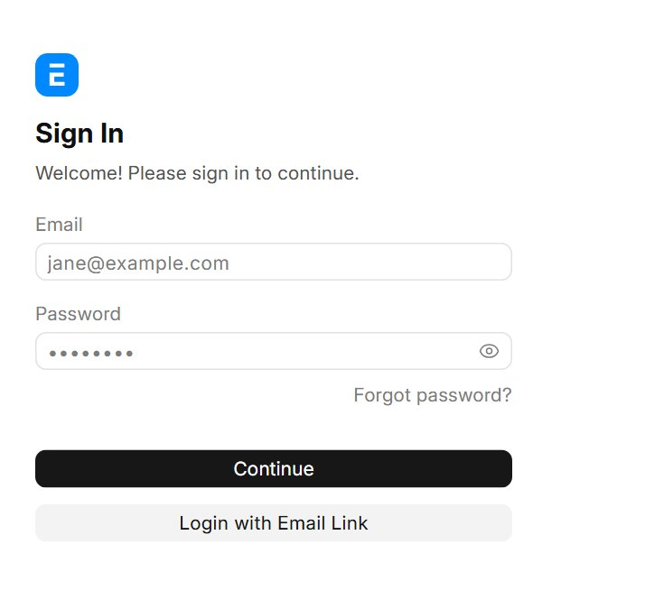
| Tujuan | Perintah |
|---|---|
| Menghentikan ERPNext, data aman | docker compose -f pwd.yml stop |
| Menyalakan kembali | docker compose -f pwd.yml start |
| Melihat status container | docker compose -f pwd.yml ps |
| Melihat log aplikasi | docker compose -f pwd.yml logs -f backend |
| Mematikan dan menghapus container, data tetap di volume | docker compose -f pwd.yml down |
Begitu Administrator masuk pertama kali, ERPNext v16 membuka Setup Wizard. Layar pembukanya menampilkan sapaan dalam berbagai bahasa dan tombol Get Started. Wizard versi 16 terdiri atas empat langkah singkat.
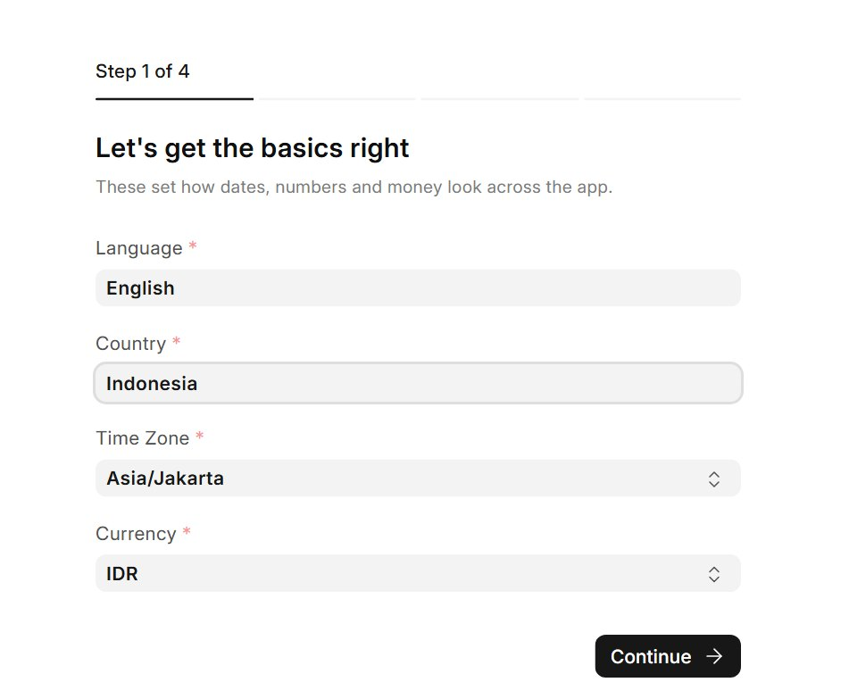
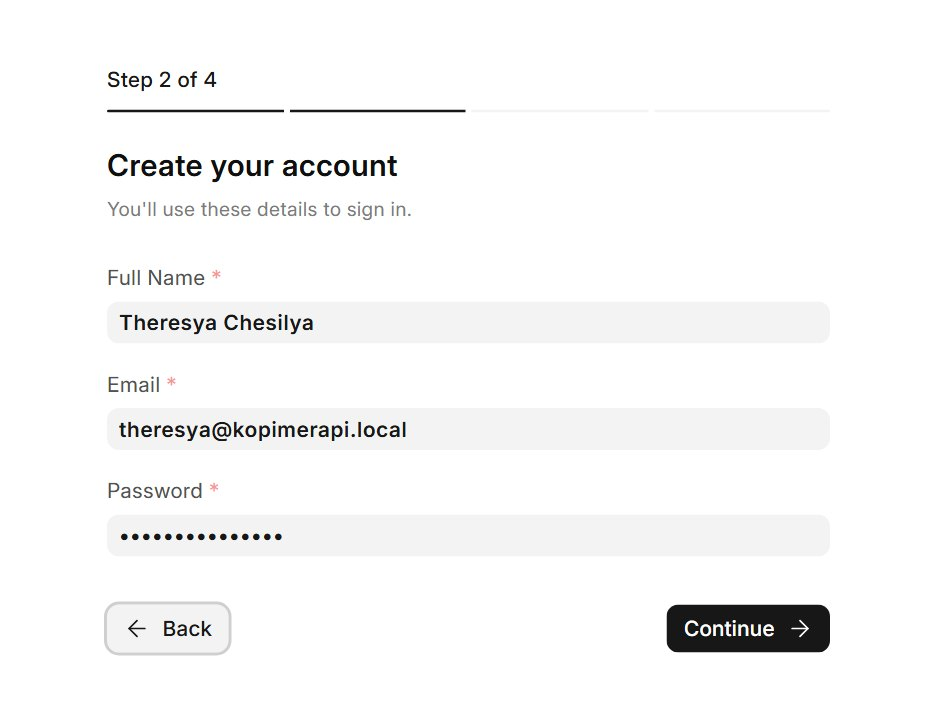
Pada langkah 1, isi Language English, Country Indonesia, Time Zone Asia/Jakarta, dan Currency IDR. Bahasa Inggris dipilih supaya nama menu sama dengan dokumentasi resmi. Langkah 2 meminta nama lengkap, surel, dan kata sandi pengguna pertama. Catat kata sandi ini karena dipakai untuk login berikutnya.
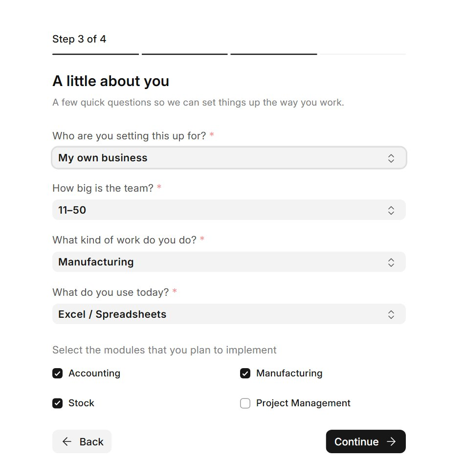
Langkah 3 adalah bagian terpenting. Isian What kind of work do you do? wajib diisi Manufacturing agar modul produksi aktif sejak awal. Isian lain bersifat profil dan boleh menyesuaikan. Centang modul Accounting, Manufacturing, dan Stock pada bagian bawah.
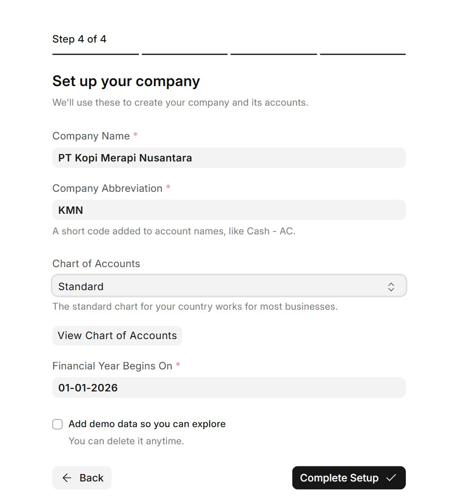
Langkah terakhir berisi identitas perusahaan. Isi Company Name PT Kopi Merapi Nusantara, ganti Company Abbreviation menjadi KMN, pilih Chart of Accounts Standard, dan isi awal tahun buku 01-01-2026. Biarkan opsi data demo tidak dicentang, lalu klik Complete Setup. Proses penyiapan berlangsung sekitar satu sampai dua menit.
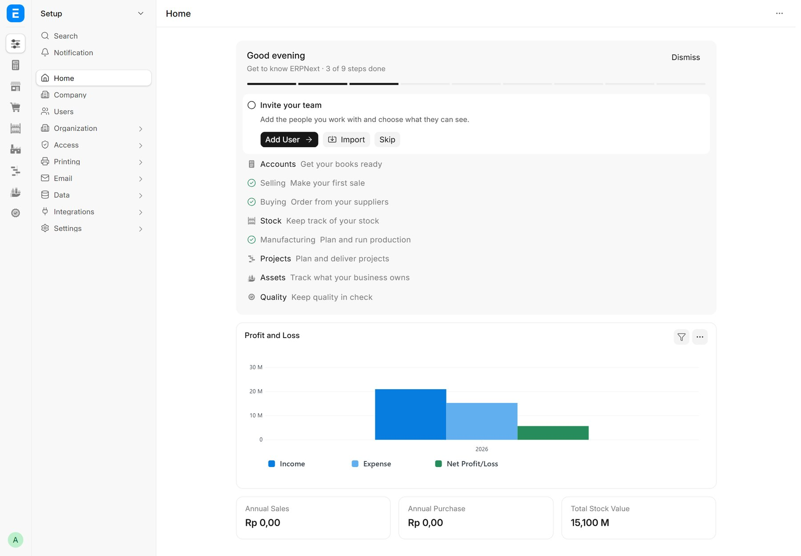
Halaman utama ERPNext disebut Desk. Bilah kiri memuat ikon modul dan daftar menu. Kotak Search (pintasan Ctrl+K) adalah cara tercepat membuka dokumen apa pun, cukup ketik misalnya Purchase Order atau Trial Balance. Setiap daftar dokumen (List View) punya tombol Add di kanan atas, sedangkan formulir dokumen menampilkan status serta tombol Save, Submit, dan Create.
Perusahaan manufaktur memisahkan gudang menurut tahap persediaan agar nilai bahan baku, barang dalam proses, dan barang jadi terpisah di buku besar. Buka Stock > Warehouse, klik Add Warehouse, lalu buat tiga gudang pada Tabel 3.1. Isian Account pada tiap gudang menghubungkan gudang ke akun persediaannya.
| Gudang | Akun persediaan | Fungsi |
|---|---|---|
| Gudang Bahan Baku - KMN | 1141 Persediaan Bahan Baku | Biji kopi hijau, pouch, label |
| Gudang Barang Dalam Proses - KMN | 1142 Persediaan Barang Dalam Proses | Bahan yang sedang disangrai dan dikemas |
| Gudang Barang Jadi - KMN | 1143 Persediaan Barang Jadi | Kopi bubuk kemasan siap jual |
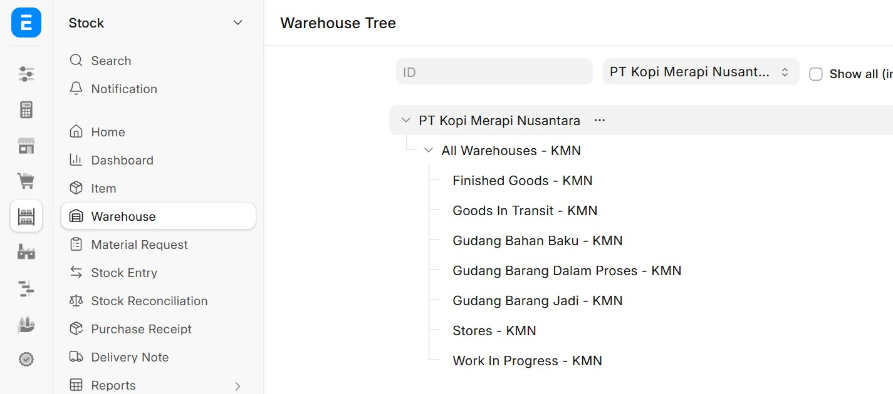
Buka Manufacturing Settings dan isi Default Work In Progress Warehouse dengan Gudang Barang Dalam Proses serta Default Finished Goods Warehouse dengan Gudang Barang Jadi. Isian Backflush Raw Materials Based On dibiarkan BOM, artinya pemakaian bahan dihitung dari resep produk. Pada Stock Settings, isi Default Warehouse dengan Gudang Bahan Baku.
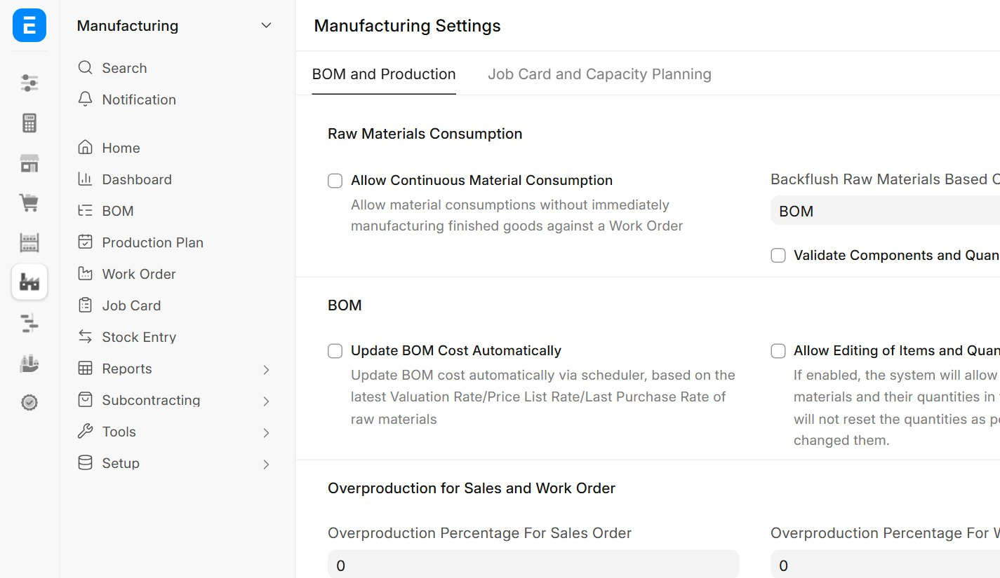
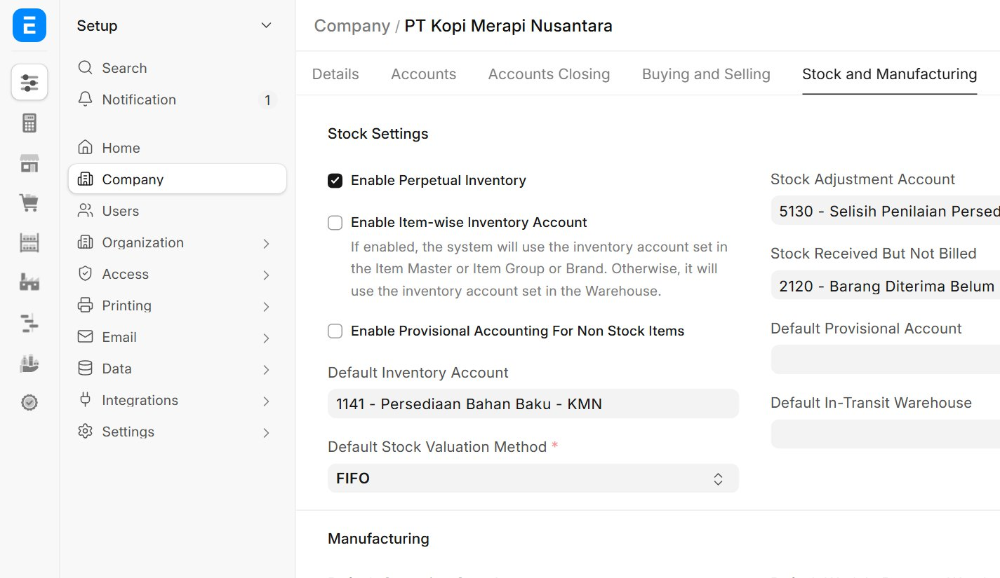
Tab Stock and Manufacturing pada formulir Company memuat dua isian penting. Enable Perpetual Inventory harus tercentang supaya setiap mutasi stok langsung menghasilkan jurnal. Default Stock Valuation Method pada studi kasus ini bernilai FIFO, yaitu barang yang masuk lebih dulu dianggap keluar lebih dulu.
Chart of Accounts (COA) adalah daftar seluruh akun yang dipakai perusahaan, dikelompokkan dalam lima akun induk: Aset, Liabilitas, Ekuitas, Pendapatan, dan Beban. COA manufaktur butuh akun yang tidak ada di perusahaan dagang, yaitu tiga akun persediaan dan akun biaya produksi. Kolom Account Type sangat penting di ERPNext karena sistem memakainya untuk mengenali fungsi akun, misalnya mana akun kas, piutang, atau persediaan.
| No. Akun | Nama akun | Root Type | Account Type | Jenis |
|---|---|---|---|---|
| 1000 | Aset | Asset | - | Grup |
| 1100 | Aset Lancar | Asset | - | Grup |
| 1110 | Kas | Asset | Cash | Grup |
| 1111 | Kas Kecil | Asset | Cash | Transaksi |
| 1120 | Bank | Asset | Bank | Grup |
| 1121 | Bank BRI | Asset | Bank | Transaksi |
| 1130 | Piutang Usaha | Asset | Receivable | Transaksi |
| 1140 | Persediaan | Asset | Stock | Grup |
| 1141 | Persediaan Bahan Baku | Asset | Stock | Transaksi |
| 1142 | Persediaan Barang Dalam Proses | Asset | Stock | Transaksi |
| 1143 | Persediaan Barang Jadi | Asset | Stock | Transaksi |
| 1200 | Aset Tetap | Asset | - | Grup |
| 1210 | Mesin Produksi | Asset | Fixed Asset | Transaksi |
| 1220 | Akumulasi Penyusutan Mesin | Asset | Accumulated Depreciation | Transaksi |
| 2000 | Liabilitas | Liability | - | Grup |
| 2100 | Liabilitas Jangka Pendek | Liability | - | Grup |
| 2110 | Utang Usaha | Liability | Payable | Transaksi |
| 2120 | Barang Diterima Belum Ditagih | Liability | Stock Received But Not Billed | Transaksi |
| 3000 | Ekuitas | Equity | - | Grup |
| 3100 | Modal Disetor | Equity | Equity | Transaksi |
| 3200 | Laba Ditahan | Equity | Equity | Transaksi |
| 4000 | Pendapatan | Income | - | Grup |
| 4100 | Penjualan Kopi Bubuk | Income | Income Account | Transaksi |
| 5000 | Beban | Expense | - | Grup |
| 5100 | Beban Produksi | Expense | - | Grup |
| 5110 | Harga Pokok Penjualan | Expense | Cost of Goods Sold | Transaksi |
| 5120 | Biaya Tenaga Kerja Langsung | Expense | Expenses Included In Valuation | Transaksi |
| 5130 | Selisih Penilaian Persediaan | Expense | Stock Adjustment | Transaksi |
| 5200 | Beban Operasional | Expense | - | Grup |
| 5210 | Beban Listrik dan Gas | Expense | Expense Account | Transaksi |
| 5220 | Beban Penyusutan | Expense | Depreciation | Transaksi |
| 5230 | Pembulatan | Expense | Round Off | Transaksi |
COA disusun dalam berkas Excel dengan kolom Account Name, Parent Account, Account Number, Parent Account Number, Is Group, Account Type, Root Type, dan Account Currency. Templat kosongnya dapat diunduh dari Chart of Accounts Importer melalui tombol Download Template. Berkas COA lengkap studi kasus ini tersedia di repositori GitHub pendamping buku dengan nama COA_PT Kopi Merapi Nusantara.xlsx.
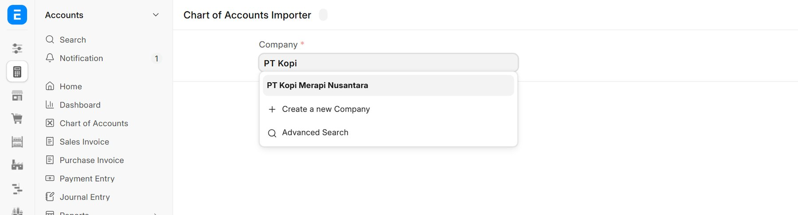
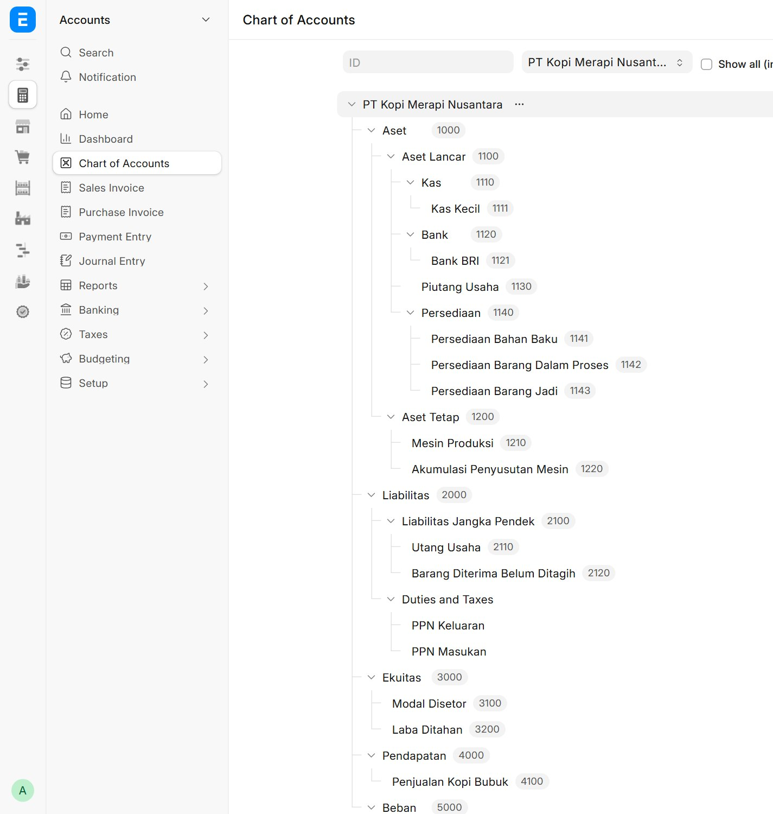
Sesudah COA baru terpasang, beri tahu ERPNext akun mana yang dipakai untuk fungsi tertentu. Buka formulir Company, tab Accounts dan tab Stock and Manufacturing, lalu isi sesuai Tabel 4.2.
| Isian | Akun |
|---|---|
| Default Bank Account | 1121 - Bank BRI - KMN |
| Default Cash Account | 1111 - Kas Kecil - KMN |
| Default Receivable Account | 1130 - Piutang Usaha - KMN |
| Default Payable Account | 2110 - Utang Usaha - KMN |
| Default Income Account | 4100 - Penjualan Kopi Bubuk - KMN |
| Default Cost of Goods Sold Account | 5110 - Harga Pokok Penjualan - KMN |
| Round Off Account | 5230 - Pembulatan - KMN |
| Default Inventory Account | 1141 - Persediaan Bahan Baku - KMN |
| Stock Adjustment Account | 5130 - Selisih Penilaian Persediaan - KMN |
| Stock Received But Not Billed | 2120 - Barang Diterima Belum Ditagih - KMN |
| Expenses Included In Valuation | 5120 - Biaya Tenaga Kerja Langsung - KMN |
| Depreciation Expense / Accumulated Depreciation | 5220 Beban Penyusutan / 1220 Akumulasi Penyusutan Mesin |
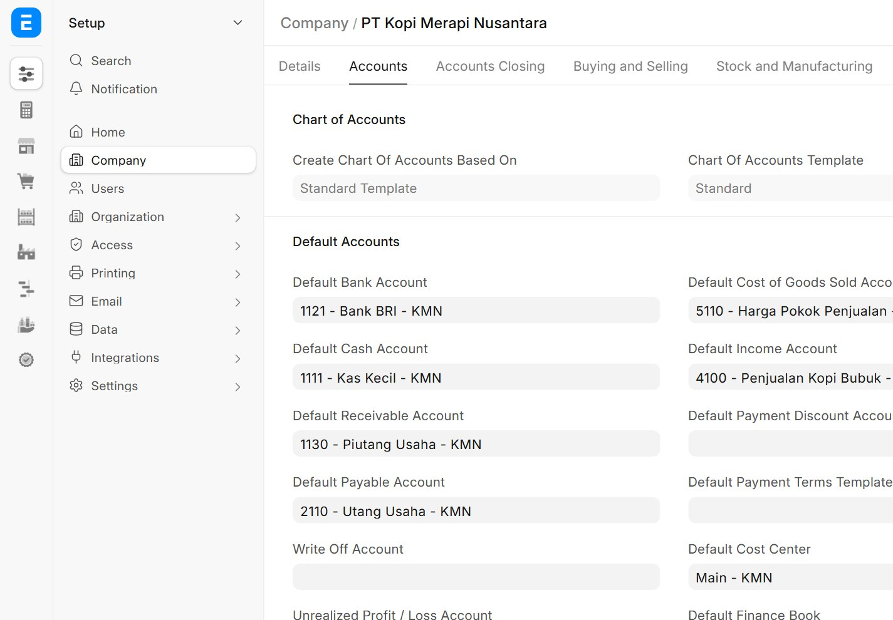
Data master adalah data yang dipakai berulang oleh banyak transaksi: barang, pemasok, pelanggan, dan resep produk. Semuanya wajib ada sebelum transaksi dicatat. Urutan yang aman adalah satuan, barang, pemasok, pelanggan, lalu BOM.
Buka Stock > Item > Add Item. Isi Item Code, Item Name, Item Group, dan Default Unit of Measure, pastikan Maintain Stock tercentang, lalu pada tab Inventory isi gudang bawaan. Bahan baku tidak perlu dijual sehingga Allow Sales boleh dimatikan, sebaliknya barang jadi tidak dibeli.
| Item Code | Item Name | Item Group | Satuan | Gudang bawaan |
|---|---|---|---|---|
| RM-KOPI-ARB | Biji Kopi Hijau Arabika | Raw Material | Kg | Gudang Bahan Baku |
| RM-POUCH-250 | Kemasan Pouch Zipper 250 g | Raw Material | Pcs | Gudang Bahan Baku |
| RM-LABEL | Label Stiker Produk | Raw Material | Pcs | Gudang Bahan Baku |
| FG-KOPI-250 | Kopi Bubuk Arabika Merapi 250 g | Products | Pcs | Gudang Barang Jadi |
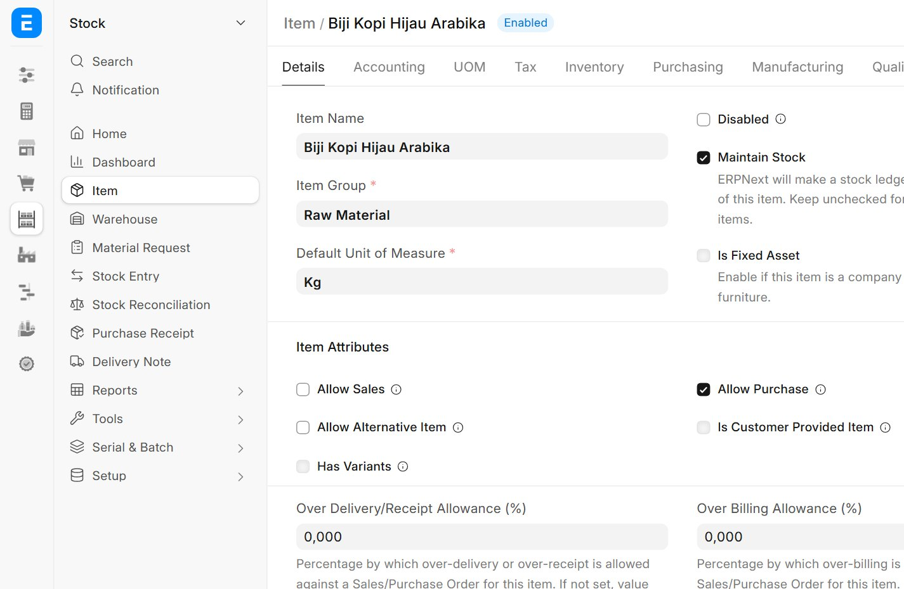
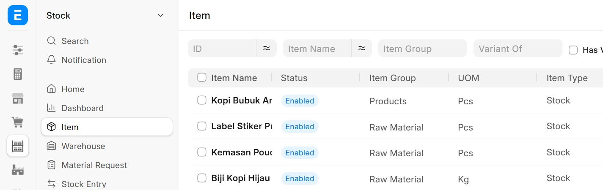
Pemasok dibuat di Buying > Supplier dan pelanggan di Selling > Customer. Isian minimalnya adalah nama, jenis (Company atau Individual), dan kelompok.
| Peran | Nama | Kelompok | Barang/keterangan |
|---|---|---|---|
| Supplier | CV Tani Merapi | Raw Material | Biji kopi hijau arabika |
| Supplier | UD Kemas Jaya | Raw Material | Pouch dan label |
| Customer | Kedai Kopi Simpang Lima | Commercial | Pembeli kopi bubuk kemasan |
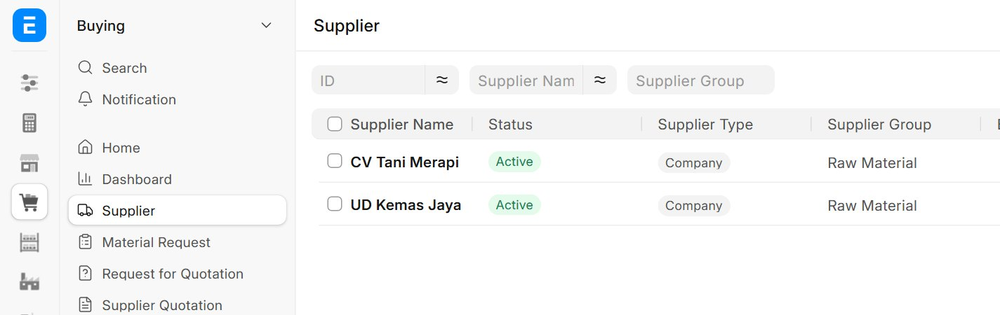
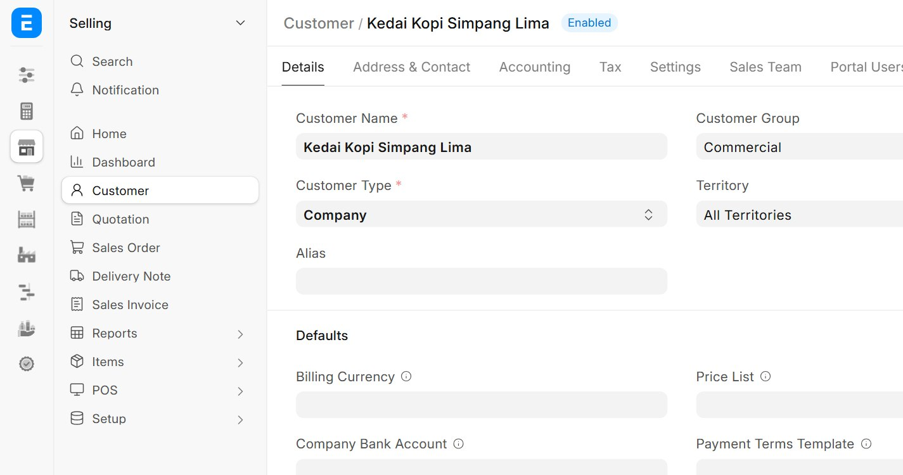
Bill of Materials (BOM) adalah resep produk: daftar bahan dan jumlahnya untuk membuat satu unit barang jadi. Buka Manufacturing > BOM > Add BOM, pilih Item FG-KOPI-250 dengan Quantity 1, isi tabel bahan sesuai Tabel 5.3, lalu Save dan Submit. BOM yang sudah di-Submit otomatis menjadi BOM bawaan (Default) bagi barang tersebut.
| Bahan | Qty | Satuan | Harga | Biaya |
|---|---|---|---|---|
| Biji Kopi Hijau Arabika | 0,3 | Kg | Rp120.000 | Rp36.000 |
| Kemasan Pouch Zipper 250 g | 1 | Pcs | Rp2.500 | Rp2.500 |
| Label Stiker Produk | 1 | Pcs | Rp500 | Rp500 |
| Total biaya bahan per bungkus | Rp39.000 |
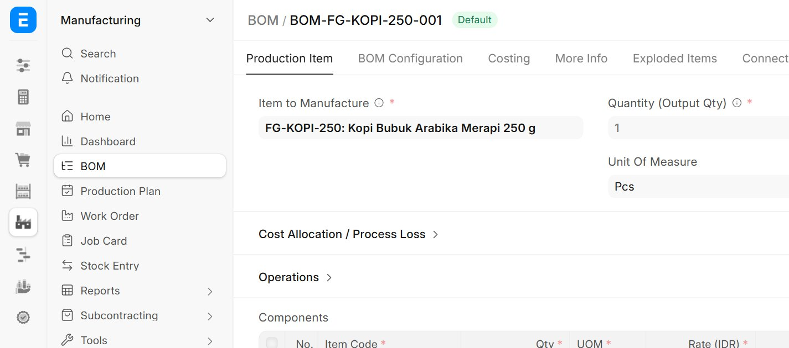
Angka 0,3 kg berasal dari susut sangrai. Biji kopi hijau kehilangan sekitar 15 sampai 20 persen beratnya saat disangrai karena kadar air menguap, sehingga 250 gram kopi bubuk membutuhkan kira-kira 300 gram biji hijau.
PT Kopi Merapi Nusantara (KMN) mengolah biji kopi hijau arabika dari petani lereng Merapi menjadi kopi bubuk kemasan 250 gram dengan merek Kopi Bubuk Arabika Merapi. Produksi memakai pola make to stock: kopi disangrai, digiling, dan dikemas lebih dulu, disimpan di gudang barang jadi, lalu dijual ke kedai kopi. Perusahaan mulai beroperasi 1 September 2026 tanpa saldo awal. Seluruh nilai dalam rupiah tanpa PPN, dan metode penilaian persediaan FIFO.
| Keterangan | Nilai |
|---|---|
| Produk | FG-KOPI-250 Kopi Bubuk Arabika Merapi 250 g |
| Biaya bahan per bungkus (BOM) | Rp39.000 |
| Rencana produksi | 500 bungkus |
| Upah tenaga kerja langsung | Rp2.500.000 untuk 500 bungkus (Rp5.000 per bungkus) |
| Harga pokok produksi per bungkus | Rp44.000 |
| Harga jual | Rp70.000 per bungkus |
Catat seluruh transaksi berikut di ERPNext sesuai urutan dan tanggalnya. Pada setiap dokumen, isi Posting Date sesuai tanggal soal. Untuk dokumen stok, centang Edit Posting Date and Time lebih dulu agar tanggal bisa diubah.
| No | Tanggal | Transaksi |
|---|---|---|
| 1 | 1 Sep | Pemilik menyetor modal Rp300.000.000 ke rekening Bank BRI perusahaan. |
| 2 | 1 Sep | Penarikan tunai dari Bank BRI untuk kas kecil Rp5.000.000. |
| 3 | 2 Sep | Pembelian mesin sangrai dan penggiling Rp48.000.000, dibayar dari Bank BRI. Umur manfaat 5 tahun, tanpa nilai sisa. |
| 4 | 3 Sep | Pesanan pembelian: 200 kg biji kopi hijau @Rp120.000 ke CV Tani Merapi (Rp24.000.000); 600 pouch @Rp2.500 dan 600 label @Rp500 ke UD Kemas Jaya (Rp1.800.000). |
| 5 | 4 Sep | Seluruh barang pesanan diterima di Gudang Bahan Baku beserta faktur pemasok, jatuh tempo 30 hari. |
| 6 | 7 Sep | Pelunasan utang UD Kemas Jaya Rp1.800.000 dan pembayaran sebagian utang CV Tani Merapi Rp14.000.000, keduanya lewat Bank BRI. |
| 7 | 8 Sep | Penyusunan BOM Kopi Bubuk Arabika Merapi 250 g sesuai Tabel 5.3. |
| 8 | 8 Sep | Perintah produksi 500 bungkus. Bahan baku dipindahkan ke Gudang Barang Dalam Proses. |
| 9 | 10 Sep | Pembayaran upah tenaga kerja langsung produksi secara tunai Rp2.500.000. |
| 10 | 11 Sep | Produksi 500 bungkus selesai dan masuk Gudang Barang Jadi. Upah Rp2.500.000 dibebankan ke harga pokok produksi. |
| 11 | 14-15 Sep | Kedai Kopi Simpang Lima memesan 300 bungkus @Rp70.000 (Rp21.000.000) pada 14 Sep. Barang dikirim dan faktur terbit 15 Sep, jatuh tempo 30 hari. |
| 12 | 21 Sep | Kedai Kopi Simpang Lima membayar sebagian tagihan Rp12.000.000 ke Bank BRI. |
| 13 | 25 Sep | Pembayaran tagihan listrik dan gas pabrik Rp1.300.000 lewat Bank BRI. |
| 14 | 30 Sep | Pencatatan penyusutan mesin September: Rp48.000.000 dibagi 60 bulan, Rp800.000. |
Bab ini membahas cara mengerjakan setiap nomor soal dengan fitur ERPNext yang tepat, lengkap dengan jurnal yang terbentuk. Ingat kembali aturan utamanya: dokumen baru memengaruhi buku besar dan stok setelah di-Submit.
Transaksi yang tidak melibatkan barang, pemasok, atau pelanggan dicatat lewat Accounting > Journal Entry > Add Journal Entry. Isi Posting Date, lalu pada tabel Accounting Entries masukkan akun debit dan kredit. Total debit harus sama dengan total kredit sebelum dokumen bisa di-Submit.
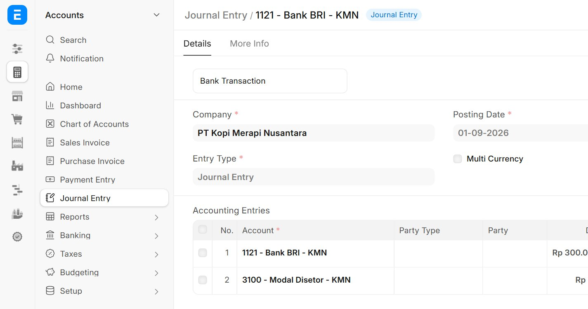
| No | Akun debit | Akun kredit | Jumlah | Entry Type |
|---|---|---|---|---|
| 1 | 1121 Bank BRI | 3100 Modal Disetor | Rp300.000.000 | Journal Entry |
| 2 | 1111 Kas Kecil | 1121 Bank BRI | Rp5.000.000 | Journal Entry |
| 3 | 1210 Mesin Produksi | 1121 Bank BRI | Rp48.000.000 | Journal Entry |
| 9 | 5120 Biaya Tenaga Kerja Langsung | 1111 Kas Kecil | Rp2.500.000 | Journal Entry |
| 13 | 5210 Beban Listrik dan Gas | 1121 Bank BRI | Rp1.300.000 | Journal Entry |
| 14 | 5220 Beban Penyusutan | 1220 Akumulasi Penyusutan Mesin | Rp800.000 | Depreciation Entry |
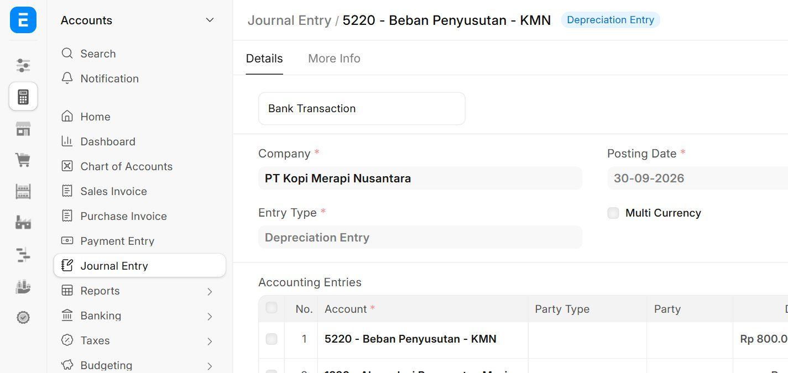
Alur pembelian di ERPNext terdiri atas tiga dokumen berantai: Purchase Order sebagai pesanan, Purchase Receipt sebagai bukti barang masuk gudang, dan Purchase Invoice sebagai tagihan pemasok.
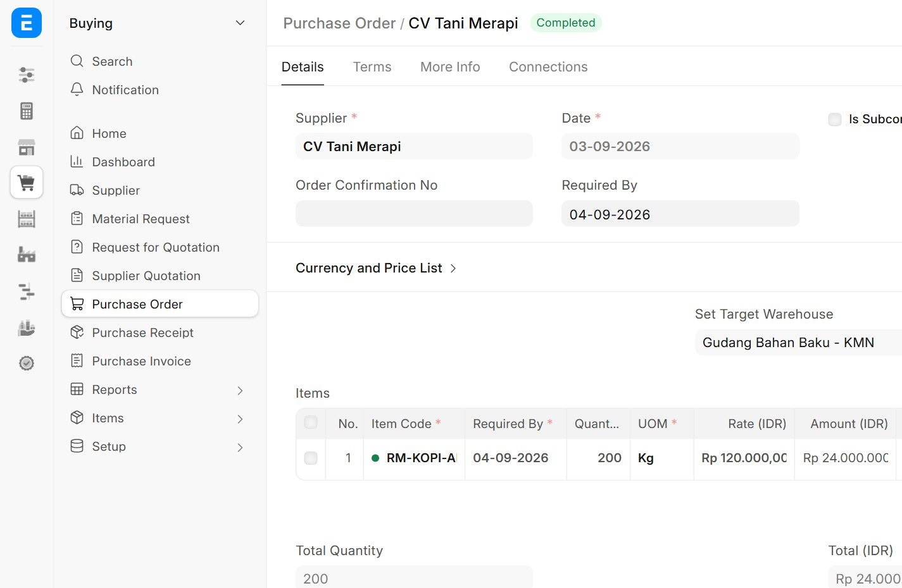
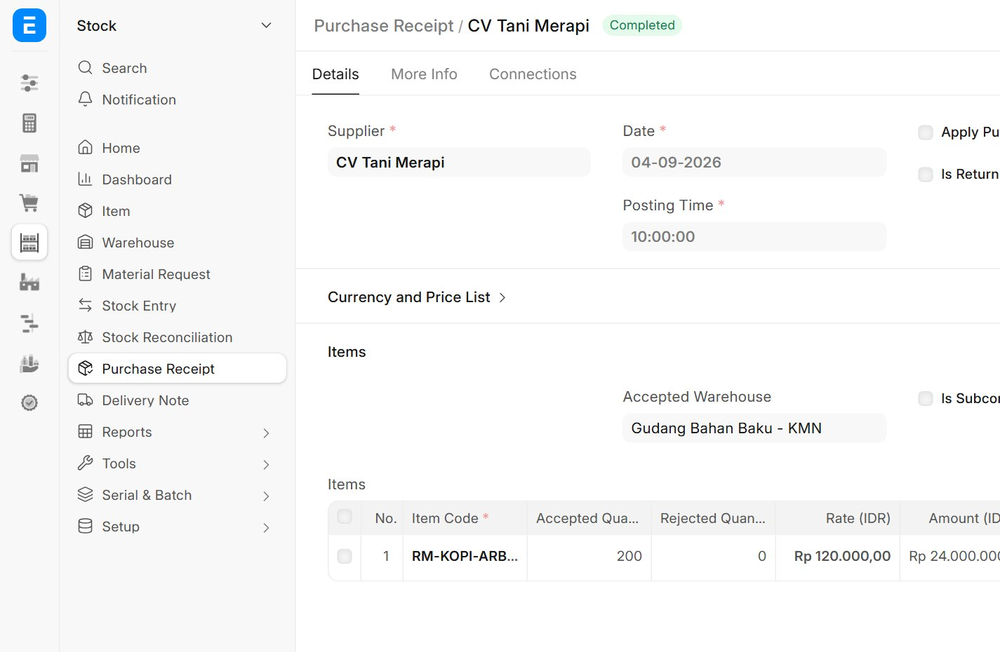
Purchase Receipt mendebit Persediaan Bahan Baku dan mengkredit akun perantara Barang Diterima Belum Ditagih. Purchase Invoice kemudian memindahkan saldo perantara itu ke Utang Usaha. Akun perantara ini bersaldo nol bila semua barang yang diterima sudah ditagih, sehingga mudah dipakai sebagai alat kontrol.
| Dokumen | Debit | Kredit | Jumlah |
|---|---|---|---|
| Purchase Receipt (2 dokumen) | 1141 Persediaan Bahan Baku | 2120 Barang Diterima Belum Ditagih | Rp25.800.000 |
| Purchase Invoice (2 dokumen) | 2120 Barang Diterima Belum Ditagih | 2110 Utang Usaha | Rp25.800.000 |
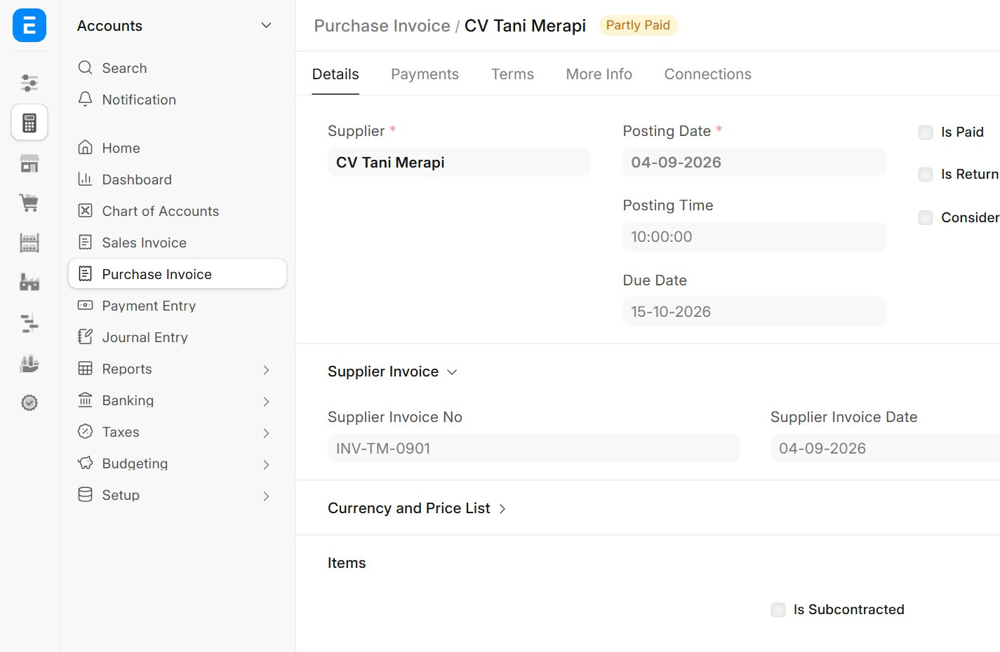
Buka Purchase Invoice yang akan dibayar, klik Create > Payment. ERPNext membuat Payment Entry dengan Payment Type Pay dan pihak pemasok terisi. Isi Posting Date 07-09-2026, Account Paid From 1121 Bank BRI, dan Paid Amount. Untuk CV Tani Merapi isi Rp14.000.000, lalu pastikan Allocated pada tabel referensi juga Rp14.000.000. Transfer bank mewajibkan Reference No dan Reference Date. Submit dokumen.
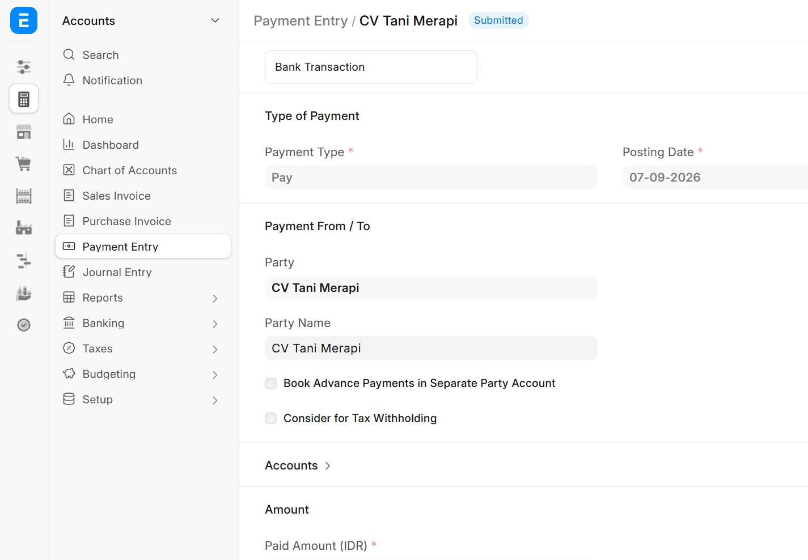
Jurnalnya mendebit Utang Usaha dan mengkredit Bank BRI. Sisa utang CV Tani Merapi Rp10.000.000 tetap tercatat dan status fakturnya berubah menjadi Partly Paid.
BOM dari soal No. 7 sudah dibuat di Subbab 5.4. Produksi dijalankan lewat tiga langkah.
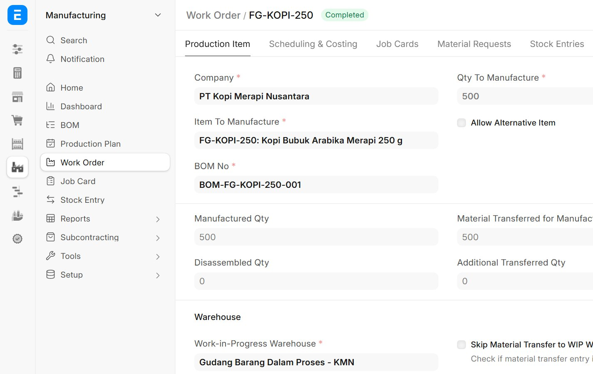
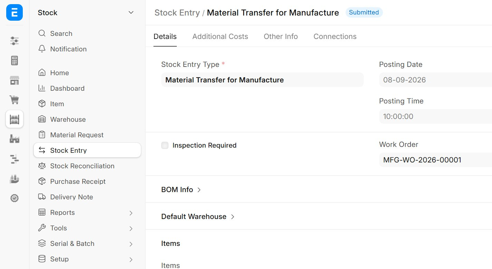
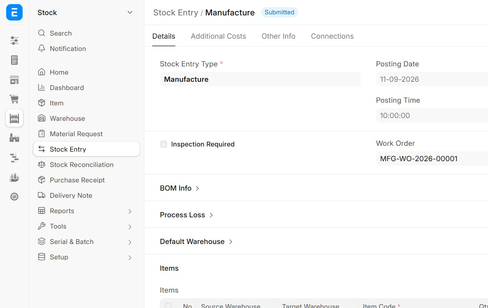
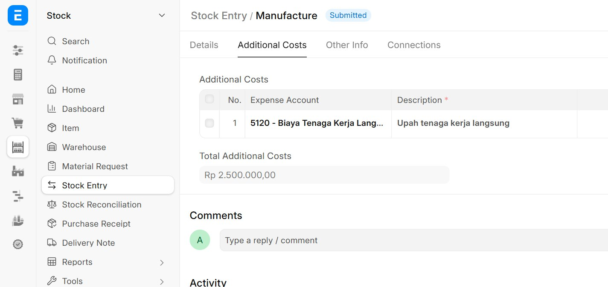
Biaya tambahan inilah yang membuat nilai barang jadi tidak hanya berisi bahan. Nilai 500 bungkus menjadi Rp19.500.000 bahan ditambah Rp2.500.000 upah, yaitu Rp22.000.000 atau Rp44.000 per bungkus. Akun 5120 bertipe Expenses Included In Valuation, sehingga upah yang semula didebit saat dibayar (soal No. 9) dikredit kembali saat produksi dan saldonya nol. Biaya upah berpindah ke persediaan, lalu baru menjadi beban saat barang terjual.
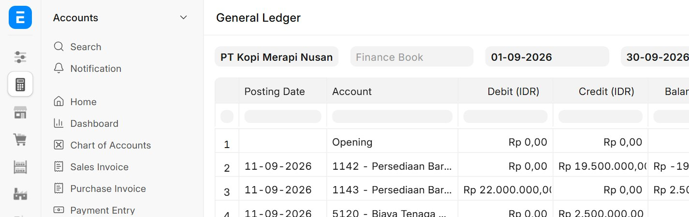
| Dokumen | Debit | Kredit | Jumlah |
|---|---|---|---|
| Material Transfer for Manufacture | 1142 Persediaan Barang Dalam Proses | 1141 Persediaan Bahan Baku | Rp19.500.000 |
| Manufacture | 1143 Persediaan Barang Jadi | 1142 Persediaan Barang Dalam Proses | Rp19.500.000 |
| Manufacture (biaya tambahan) | 1143 Persediaan Barang Jadi | 5120 Biaya Tenaga Kerja Langsung | Rp2.500.000 |
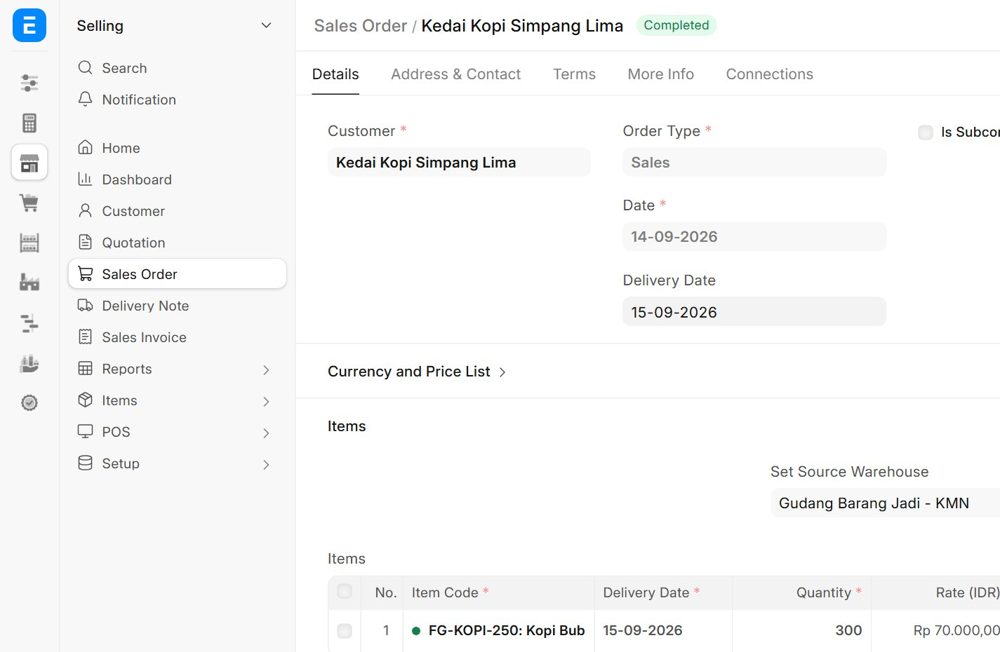
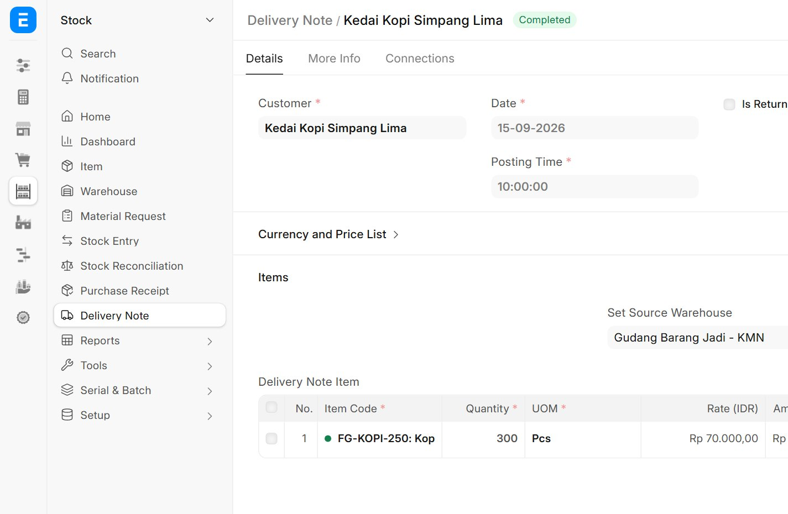
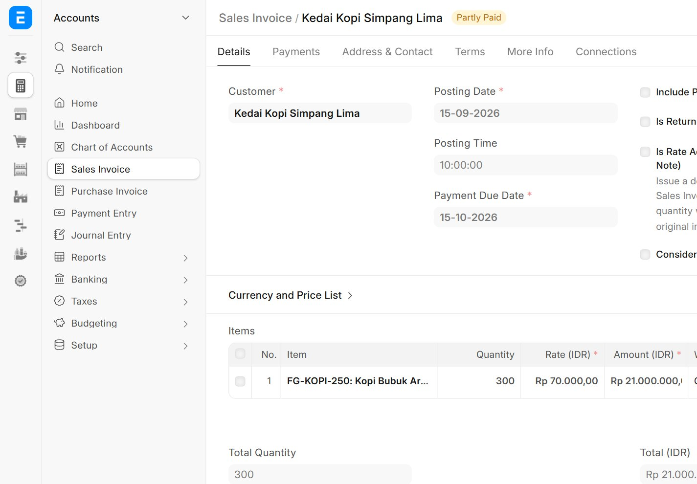
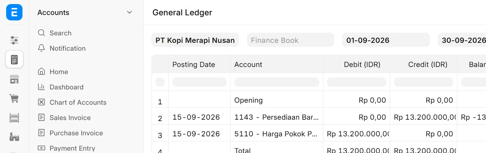
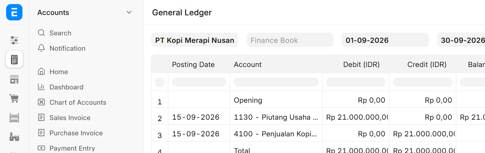
Harga pokok penjualan dihitung otomatis dari nilai persediaan barang jadi: 300 bungkus dikali Rp44.000 sama dengan Rp13.200.000. Pada alur ini HPP diakui oleh Delivery Note, sementara pendapatan diakui oleh Sales Invoice.
Buka Sales Invoice, klik Create > Payment. Payment Entry bertipe Receive terbentuk. Isi tanggal 21-09-2026, Account Paid To Bank BRI, Paid Amount Rp12.000.000, alokasi Rp12.000.000, serta nomor dan tanggal referensi transfer. Submit. Jurnalnya mendebit Bank BRI dan mengkredit Piutang Usaha, menyisakan piutang Rp9.000.000.
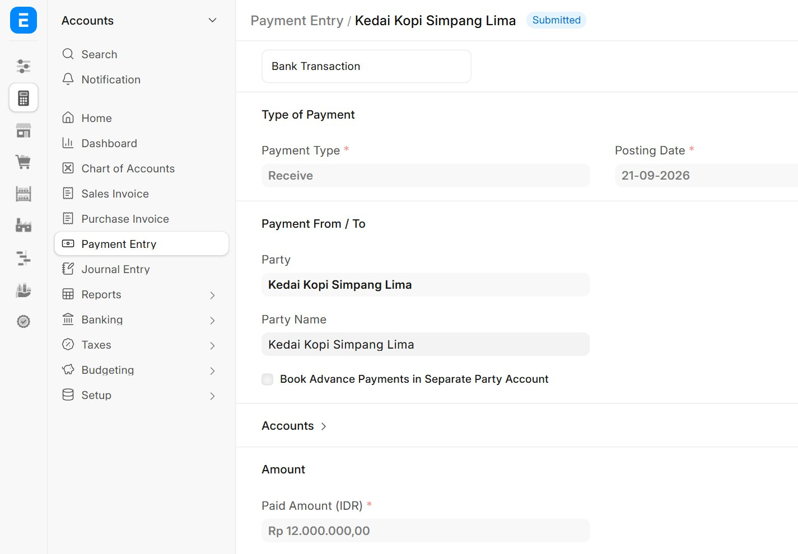
Pekerjaan dianggap benar bila laporan ERPNext menunjukkan angka yang sama dengan hitungan manual. Seluruh laporan di bawah dibuka dari Accounting > Reports atau lewat kotak Search, dengan filter Company PT Kopi Merapi Nusantara dan periode 01-09-2026 sampai 30-09-2026.
General Ledger menampilkan seluruh jurnal secara kronologis. Pilih Group By Group by Voucher (Consolidated) supaya jurnal tiap dokumen terkumpul. Filter Voucher No berguna untuk melihat jurnal satu dokumen saja, seperti pada gambar-gambar di Bab 7.
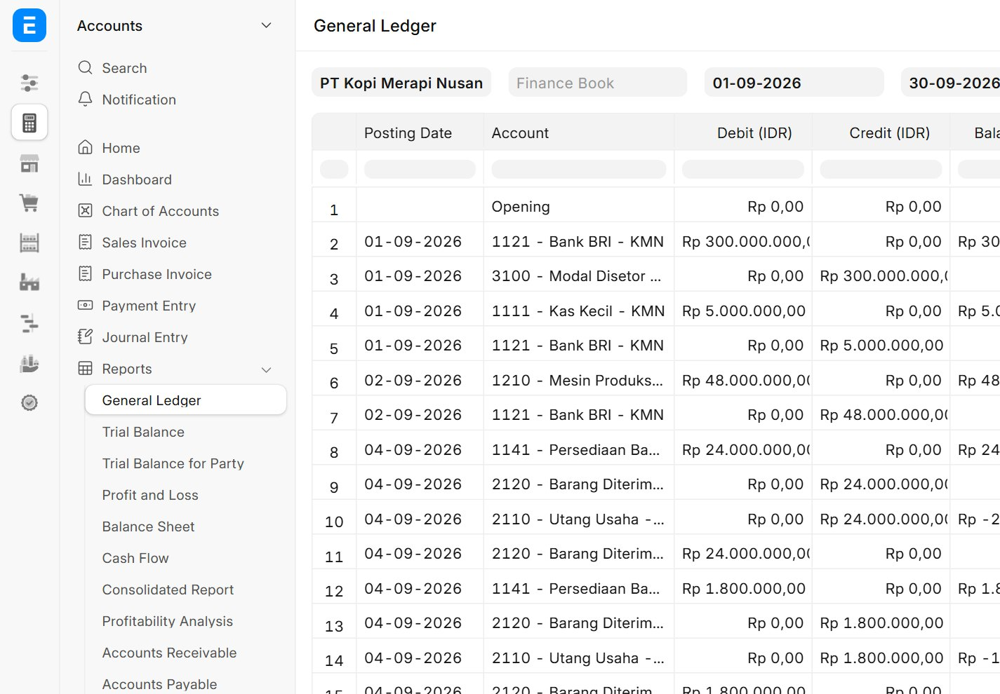
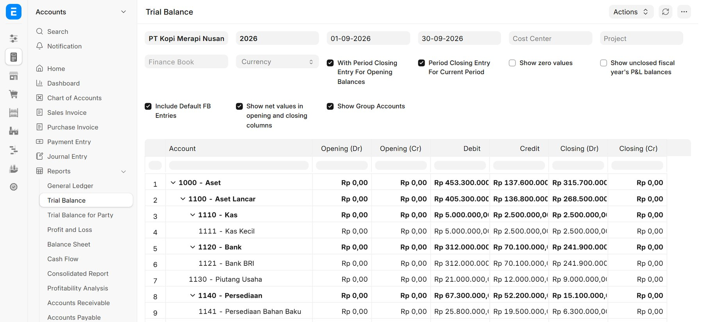
| Akun | Debit | Kredit |
|---|---|---|
| 1111 Kas Kecil | 2.500.000 | |
| 1121 Bank BRI | 241.900.000 | |
| 1130 Piutang Usaha | 9.000.000 | |
| 1141 Persediaan Bahan Baku | 6.300.000 | |
| 1143 Persediaan Barang Jadi | 8.800.000 | |
| 1210 Mesin Produksi | 48.000.000 | |
| 1220 Akumulasi Penyusutan Mesin | 800.000 | |
| 2110 Utang Usaha | 10.000.000 | |
| 3100 Modal Disetor | 300.000.000 | |
| 4100 Penjualan Kopi Bubuk | 21.000.000 | |
| 5110 Harga Pokok Penjualan | 13.200.000 | |
| 5210 Beban Listrik dan Gas | 1.300.000 | |
| 5220 Beban Penyusutan | 800.000 | |
| Jumlah | 331.800.000 | 331.800.000 |
Total mutasi debit dan kredit selama September, yang tampil pada kolom Debit dan Credit laporan, sama-sama Rp512.700.000. Akun 1142 Barang Dalam Proses, 2120 Barang Diterima Belum Ditagih, dan 5120 Biaya Tenaga Kerja Langsung bersaldo nol karena seluruh bahan sudah selesai diproduksi, semua barang sudah ditagih pemasok, dan upah sudah dibebankan ke persediaan.
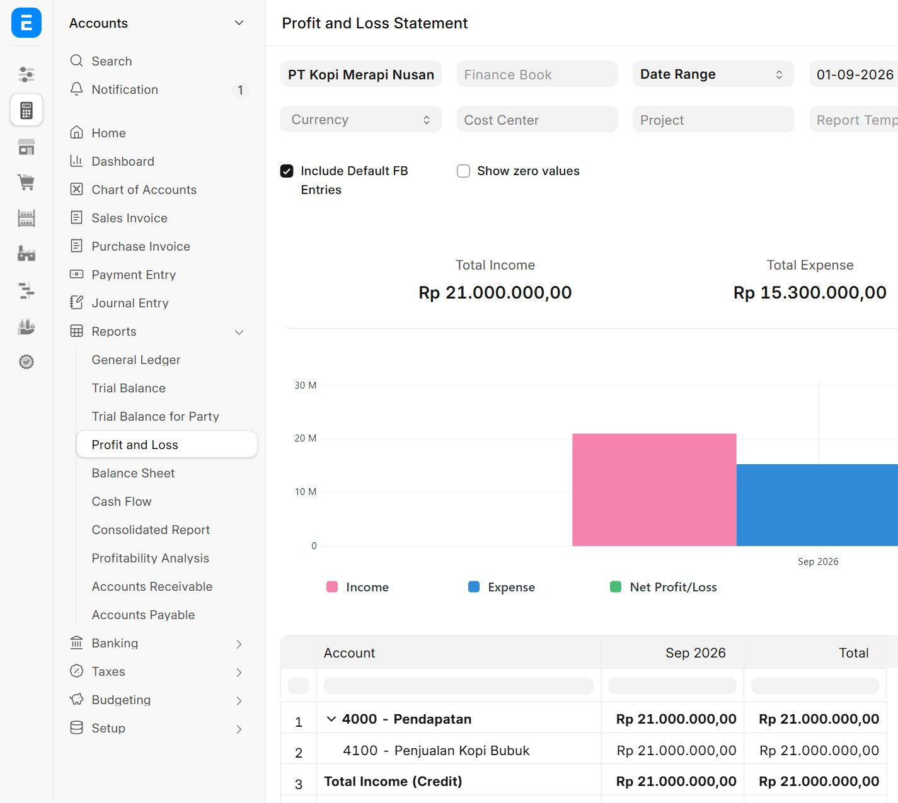
| Pos | Jumlah (Rp) |
|---|---|
| Penjualan Kopi Bubuk | 21.000.000 |
| Harga Pokok Penjualan | (13.200.000) |
| Laba kotor | 7.800.000 |
| Beban Listrik dan Gas | (1.300.000) |
| Beban Penyusutan | (800.000) |
| Laba bersih | 5.700.000 |
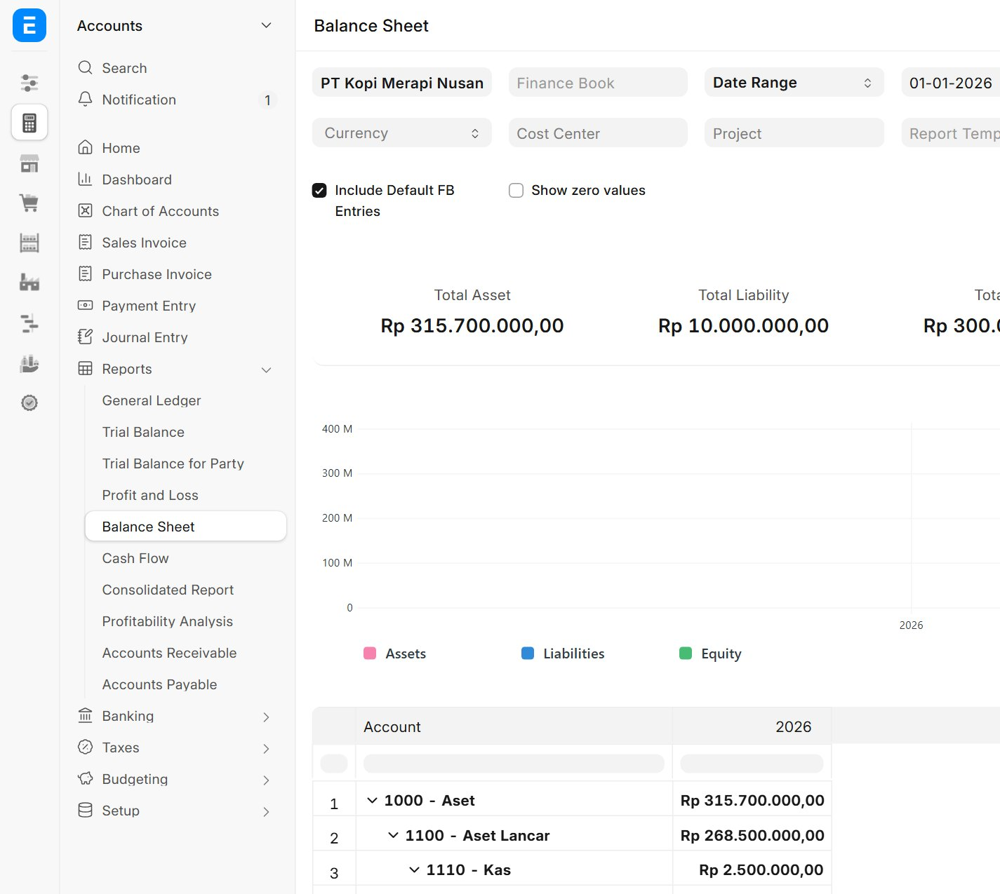
Total aset Rp315.700.000 sama dengan liabilitas Rp10.000.000 ditambah ekuitas Rp300.000.000 dan laba berjalan Rp5.700.000. ERPNext menampilkan laba yang belum ditutup ke Laba Ditahan sebagai Provisional Profit / Loss.
Laporan Stock > Stock Balance di versi 16 berjalan sebagai laporan latar belakang. Isi filter, klik Generate New Report, tunggu beberapa detik, lalu muat ulang halaman.
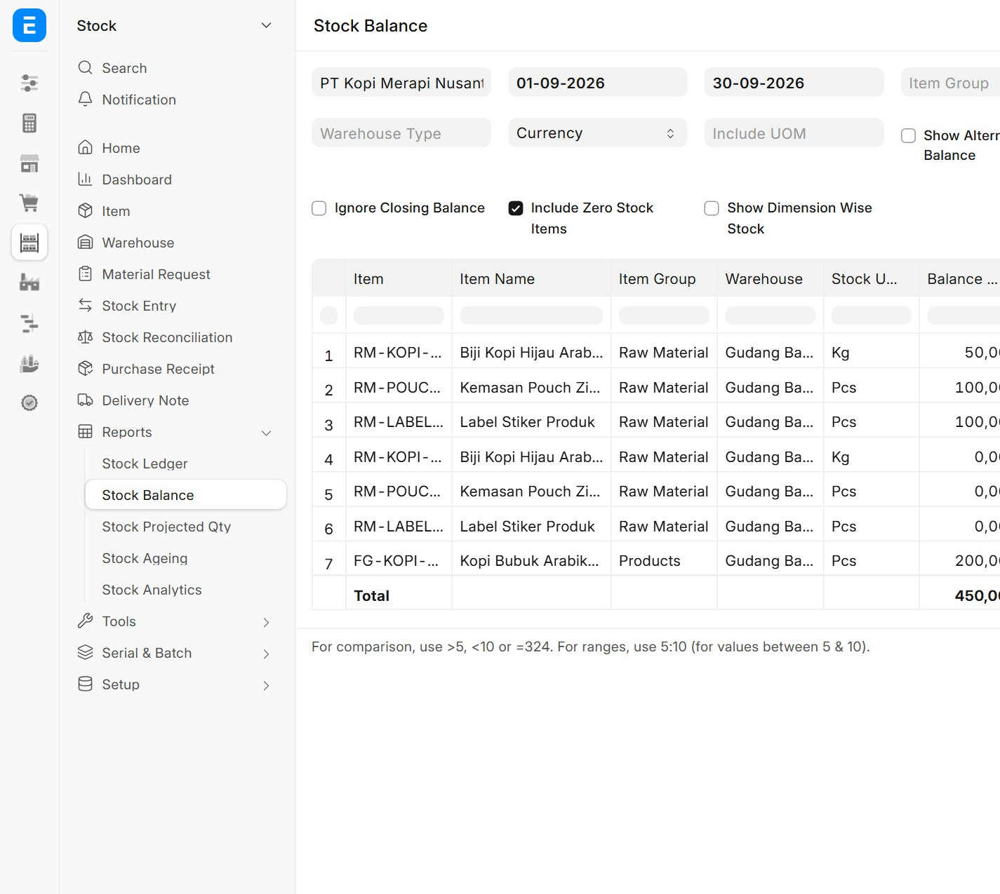
| Barang | Gudang | Qty | Nilai (Rp) |
|---|---|---|---|
| Biji Kopi Hijau Arabika | Bahan Baku | 50 kg | 6.000.000 |
| Kemasan Pouch Zipper 250 g | Bahan Baku | 100 pcs | 250.000 |
| Label Stiker Produk | Bahan Baku | 100 pcs | 50.000 |
| Kopi Bubuk Arabika Merapi 250 g | Barang Jadi | 200 pcs | 8.800.000 |
| Jumlah | 15.100.000 |
Nilai persediaan Rp15.100.000 sama persis dengan saldo grup akun 1140 Persediaan di Trial Balance. Kecocokan ini membuktikan bahwa perpetual inventory bekerja dengan benar.
Skema berikut merangkum seluruh pengerjaan dalam satu alur. Setiap kotak adalah dokumen ERPNext, dan panah menunjukkan dokumen yang dibuat dari dokumen sebelumnya lewat tombol Create.
| Tahap | Soal | Dokumen ERPNext | Nomor dokumen |
|---|---|---|---|
| Persiapan | - | Setup Wizard, Chart of Accounts Importer, Company, Warehouse | - |
| Data master | 7 | Item, Supplier, Customer, BOM | BOM-FG-KOPI-250-001 |
| Modal dan aset | 1, 2, 3 | Journal Entry | ACC-JV-2026-00001 s.d. 00003 |
| Pengadaan | 4 | Purchase Order | PUR-ORD-2026-00001, 00002 |
| Pengadaan | 5 | Purchase Receipt, Purchase Invoice | MAT-PRE-2026-00001, 00002; ACC-PINV-2026-00001, 00002 |
| Pengadaan | 6 | Payment Entry (Pay) | ACC-PAY-2026-00001, 00002 |
| Produksi | 8 | Work Order, Stock Entry (Material Transfer) | MFG-WO-2026-00001; MAT-STE-2026-00001 |
| Produksi | 9 | Journal Entry upah | ACC-JV-2026-00004 |
| Produksi | 10 | Stock Entry (Manufacture) + Additional Costs | MAT-STE-2026-00002 |
| Penjualan | 11 | Sales Order, Delivery Note, Sales Invoice | SAL-ORD-2026-00001; MAT-DN-2026-00001; ACC-SINV-2026-00001 |
| Penjualan | 12 | Payment Entry (Receive) | ACC-PAY-2026-00003 |
| Penutupan | 13, 14 | Journal Entry, Depreciation Entry | ACC-JV-2026-00005, 00006 |
| Pelaporan | - | General Ledger, Trial Balance, P&L, Balance Sheet, Stock Balance | - |
Tabel berikut memuat kendala yang lazim ditemui, termasuk pesan galat yang benar-benar muncul selama studi kasus buku ini dikerjakan di ERPNext v16.
| Gejala atau pesan | Penyebab | Solusi |
|---|---|---|
| Docker Desktop tidak mau menyala | WSL 2 atau virtualisasi belum aktif | Jalankan wsl --update, aktifkan virtualisasi di BIOS, mulai ulang komputer |
| localhost:8080 tidak terbuka atau galat 502 | Situs masih dibuat oleh create-site | Pantau log create-site, tunggu sampai selesai, lalu muat ulang |
| port is already allocated | Port 8080 dipakai aplikasi lain | Ubah pemetaan port di pwd.yml menjadi 8081:8080, akses localhost:8081 |
| Singkatan berubah menjadi PKMN | Diisi otomatis dari nama perusahaan | Ketik ulang KMN di langkah 4 Setup Wizard sebelum Complete Setup |
| COA ditolak importer | Akun Cash/Bank/Stock bukan akun grup, atau tipe akun wajib tidak ada | Jadikan 1110, 1120, 1140 akun grup; lengkapi tipe Payable, Receivable, COGS, Stock Adjustment, Fixed Asset, Depreciation |
| Journal Entry type should be set as Depreciation Entry | Jurnal penyusutan memakai Entry Type biasa | Ganti Entry Type menjadi Depreciation Entry |
| Can't change the valuation method | Metode penilaian diubah setelah ada transaksi stok | Tentukan FIFO atau Moving Average sebelum transaksi pertama |
| Tanggal dokumen stok tidak bisa diubah | Opsi tanggal manual belum aktif | Centang Edit Posting Date and Time |
| Nilai barang jadi hanya berisi bahan | Upah tidak dimasukkan ke Additional Costs | Cancel Stock Entry Manufacture, Amend, isi Additional Costs, Submit ulang |
| Laporan P&L menampilkan From Date and To Date are mandatory | Filter tanggal kosong | Isi Start Date dan End Date pada filter laporan |
| Stock Balance kosong | Laporan berjalan di latar belakang | Klik Generate New Report, tunggu, muat ulang |
Dokumen yang sudah Submitted tidak bisa diedit langsung. Klik Cancel, ERPNext membuat jurnal balik sehingga pengaruhnya hilang. Klik Amend untuk membuat salinan dokumen dengan akhiran -1, perbaiki isiannya, lalu Submit ulang. Pembatalan harus mengikuti urutan terbalik dari rantai dokumen. Sales Invoice yang sudah dibayar, misalnya, hanya bisa dibatalkan sesudah Payment Entry-nya dibatalkan lebih dulu.
ERPNext memperlihatkan bagaimana satu transaksi bisnis mengalir menjadi angka akuntansi tanpa perlu disalin ulang. Pada studi kasus PT Kopi Merapi Nusantara, empat belas transaksi September 2026 cukup dicatat lewat dokumen operasional, dan sistem membentuk sendiri jurnal persediaan, harga pokok produksi, harga pokok penjualan, piutang, serta utang. Hasilnya dibuktikan oleh Trial Balance yang seimbang, laba bersih Rp5.700.000, total aset Rp315.700.000, dan nilai persediaan yang sama persis dengan saldo akun persediaan.
Kunci keberhasilan pengerjaan terletak pada persiapan: singkatan perusahaan yang benar, COA yang diimpor sebelum transaksi, akun bawaan yang lengkap, gudang yang terhubung ke akun persediaan, serta metode penilaian persediaan yang ditetapkan sejak awal.
Pembaca disarankan mengulang studi kasus ini dengan variasi, misalnya menambah biaya overhead pabrik ke Additional Costs, memakai Workstation dan Operation pada BOM, atau mencoba retur penjualan lewat Credit Note. Latihan semacam itu memperdalam pemahaman tentang hubungan antara dokumen operasional dan jurnal akuntansi.
Docker Inc. (2026). Install Docker Desktop on Windows. Docker Documentation. https://docs.docker.com/desktop/setup/install/windows-install/
Frappe Technologies. (2026a). ERPNext documentation (Version 16). https://docs.erpnext.com
Frappe Technologies. (2026b). frappe_docker: Docker images for production and development setups of the Frappe framework and ERPNext [Repositori GitHub]. https://github.com/frappe/frappe_docker
Frappe Technologies. (2026c). ERPNext: Free and open source enterprise resource planning [Repositori GitHub]. https://github.com/frappe/erpnext
Monk, E. F., & Wagner, B. J. (2013). Concepts in enterprise resource planning (4th ed.). Course Technology, Cengage Learning.
Romney, M. B., & Steinbart, P. J. (2021). Accounting information systems (15th ed.). Pearson.